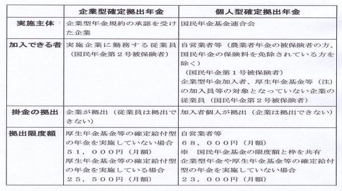
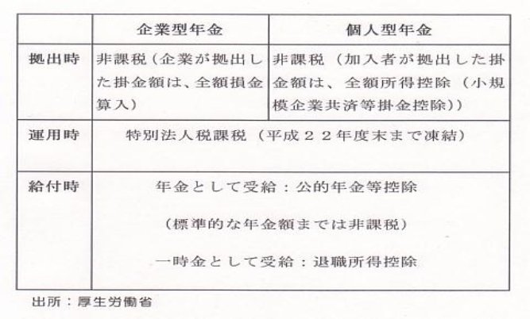
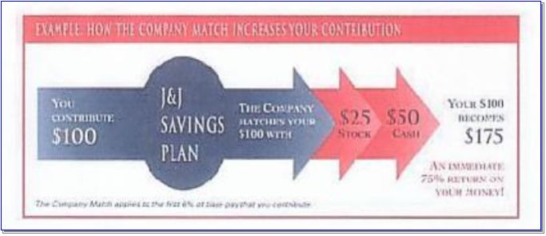
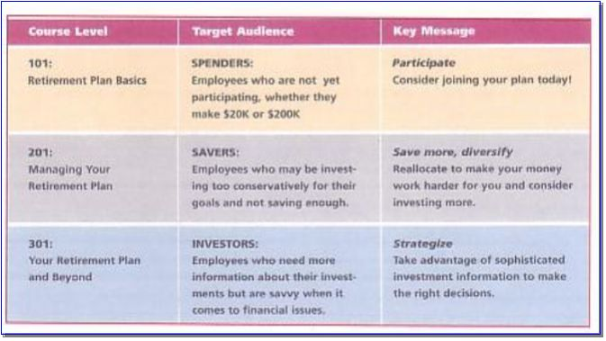
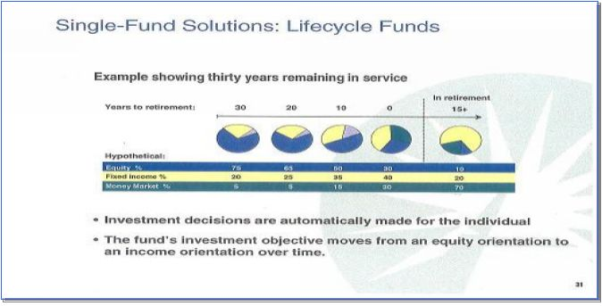
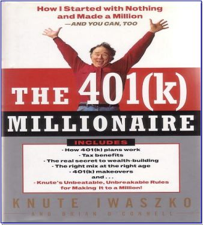
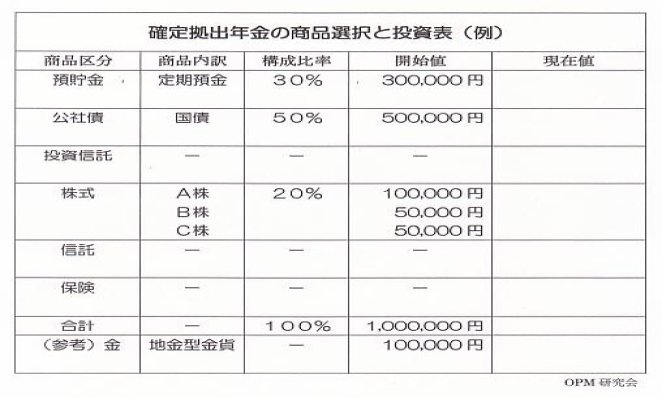
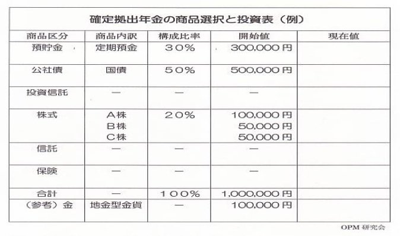
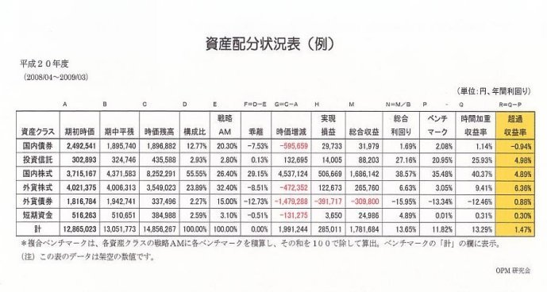

| iDeCo確定拠出年金はじめのはじまり 確定拠出年金シリーズ 2/3 | |
| 年金カウンセラー 高野 義博 | |
| Takano Yoshihiro (2013) | |
iDeCo
確定拠出年金はじめのはじまり
年金カウンセラー
高野 義博
目 次
１．はじめのはじまり
２．浪費家・貯蓄家・投資家
３．年代別資産配分
４．目標設定
５．投資商品の選択と運用
６．資産配分チェック
７．勝手格付けゲーム
ＷＥＢ
著者
1．はじめのはじまり
Ｑ3 ひとつお聞きしたいのですが、最近始まった確定拠出年金について？ ＜日本版401k＞とか言うのですか......。
Ａ ええっ、大上段に来ましたね。出来れば、ハッシと受け止め、ガバッと打ち据えたいのですが......それは別の本に当たってください。実務書はたくさん出版されています。それに理論や知識や技術はインターネットの検索でも調べられます。ここでは、導入というか、入り口辺りをお話するだけですが、宜しいですか?
つまり、確定拠出年金のはじめのはじまりです。
Ｑ3 ストーリーがお聞きできればいいです。
Ａ そお、ストーリーですね。確定拠出年金の筋書き、物語りですか......。
Ｑ3 自分の立ち位置がわからず、うろうろしているものですから。
Ａ そおですか。...じゃあ、始めてみましょうか、とはいえ、......。
う～ん、そお、これをまず見てください。この「米国401(k)調査記録」（平成11年1999・拙著）のここにこういう記事があります。
「 日本経済の１０年に及ぶ超低金利のもと、確定給付型の厚生年金基金の積立不足、国際会計基準の導入等に伴う企業負担の増大を背景に規制緩和・公的年金等の改善の議論が沸き起こっていました。平成９年３月の自民党行革本部を端初に、平成１０年３月規制緩和推進計画が閣議決定され、以後、自民党労働部会・勤労者拠出型年金等小委員会、年金審議会、自民党年金制度調査会・私的年金等小委員会、税制調査会等の審議を経て平成１１年１月の関係４省（大蔵、厚生、通産および労働）による「確定拠出型年金制度準備会議」の設置を受け、この６月には具体的な制度設計が示されることになっていました。偶々、ボストンに移動するためのジョン・Ｆ・ケネディ空港に向かうバスの中で、６月９日付けの読売新聞国際版の自民党年金制度調査会・私的年金等小委員会（８日開催）において示された政府・自民党案「確定拠出型年金制度案」の記事のコピ－が配られました。この間、民間でも平成１０年９月の経団連「確定拠出型企業年金制度の導入を求める」というレポ－トが出て、確定給付型、公的年金を含めて多方面に議論が巻き起こり、マスコミにも取り上げられセミナ－も多数開催され、関係書籍も多数出版されていました。情報過多のような状況でしたが、マイナス思考の考え方が圧倒的に多く、日本にいては視野が限定されていて今一つ分からない部分があり、＜現場に行こう＞ということになったとのことでありました。 」
Ｑ3 盛んに研究されていたのですねぇ。
Ａ ええ。...さて、それは別にして、このような法律成立前の動きがあった後、次のような経過を経て、確定拠出年金法が成立しました。
Ｑ3 やはり、企業サイドの意向が強かったのですね。
Ａ バブル崩壊で切羽詰っていましたからねぇ。確定拠出年金は、政府が、平成１３年（2001）確定拠出年金法、平成１４年（2002）確定給付企業年金法を制定し、新しく確定拠出年金（ＤＣ Defined Contribution）を導入したものです。これには、企業型と個人型がありますけど、時代のニーズに応えたものでしょう。この頃から働き方が多様化していましたので。
Ｑ3 時代のニーズ、要請ですか？
Ａ ええ、バブル崩壊後の日本経済の落ち込みはご承知でしょ。会社では生き残りのために旧秩序の見直しがされていますよね、護送船団方式とか成果主義とか代行返上とか、お聞きになったことありますよね。
Ｑ3 ええ、世の中混沌としていますものねぇ！
Ａ 乱れているってことは、末は明るいのですよね。
Ｑ3 そうですね。明るくするには、どうしたらいいんでしょう？
Ａ まずは旧秩序の検証でしょう。それと時代の変化を読み取ることでしょうか。
Ｑ3 検証......ですか。
Ａ 戦後日本人は貧しかったので、政府や官僚や会社がしてくれることを唯々諾々と受けていたきらいがありますでしょ。
Ｑ3 と言われてもねぇ、他になすすべもなかったんでしょう。それに雇われないなんて難しかったんでしょ。
Ａ そうではあったのですが、一歩下がって、日本の年金の生い立ちを考えると受け身であったことにはちがいありませんでしょ。
Ｑ3 そうですね、......。
Ａ 日本の年金は、上（政府）から下（国民）へ提供されていたので、年金はもらうものでしたものねぇ。企業年金だって会社から、もらうものでしたもの。つまり、年金は二の次というか受け身だったんですよ！
Ｑ3 そうですねぇ、......会社の先輩たちを見ていると。
Ａ 新しい確定拠出年金の枠組みは、そこが違うんです。
Ｑ3 そこって、
Ａ つまり、もらうだけでよかったのが、かちとるに切り替わったということです。自分で老後資金を勝ち取る仕組みなんですよ。政府や会社は仕組みを用意するだけで、中身は自分で作るわけです。
Ｑ3 そお、......。それって何かいいことありますか？
Ａ メリットですね。ええ、今までにない最大のメリットは＜個人勘定＞だということでしょう。
Ｑ3 なんですか、それは？ どんぶり勘定と言うのは聞いたことありますけど。
Ａ そうですね、日本の年金はこれまで全て政府の一括管理、つまりどんぶり勘定だったんです。例えば、「厚生年金勘定」はあっても、その中の自分の年金は幾らというのが不透明な仕組みだったのです。それもこれも、背景に国の会計が単式簿記の小遣い帳方式をベースにしているため、不透明になってしまうのです。
Ｑ3 国の会計が単式簿記なんですか！
Ａ ええ、国だけではなく、県や市町村もです。
Ｑ3 そういえば、前に新聞で藤沢市が複式簿記にしたとかいうのを見たことがありました。他にも、実験的に取り組んでいるところがあるようですね。
Ａ そうでした。ところで、＜アフリカ諸国・北朝鮮・日本＞で、なにを想像しますか。
Ｑ3 えっ、なんだろう、核保有じゃないし、飢餓国......でもないし、なんだろう。
Ａ ......実は、これは国の会計制度が単式簿記の国々です。未開国なんですよ、日本のインフラは。国民として恥ずかしい限りです。
Ｑ3 ほほっ、ビックリしたなぁ。それが現実なんですか！
Ａ そこへ風穴を開けるのが確定拠出年金の個人勘定です。これを端緒のひとつに日本の公会計もおいおい複式簿記になっていくのでしょう。国際会計基準も入ってくるし。でも、一言付け加えれば、私の経験では、健康保険組合は単式簿記でしたが、厚生年金基金は制度発足（昭和４１年）以来複式簿記でした。それも、時価会計採用（平成８年）は企業会計より先行しました。
Ｑ3 そうなんだ、知らなかったなあ！ 皆、知っているのかな？
Ａ 知る人ぞ知る、でしょうね。今の都知事とかね。でも、大企業のトップたちでさえ知らないのが実態のようですし、ほとんどの人が知らないでしょう。知っているふりをする人は多いようですが。それは別にして、この単式簿記の弊害を承知して、どんな政策提言よりも、国の根幹をなす複式簿記の導入を最優先課題とすべきでしょう。つまり、政府予算の使い切りという単年度予算の仕組みを変えなけりゃならないんです。あえて言えば、現在の日本の諸問題、＜失われた２０年＞の根本原因は単式簿記だと考えることが出来ます。今の日本の諸悪の根源になっています。損を認識しなくていいので、というよりできないので延命可能な単式簿記、＜借金は収入＞のカラクリ、これを複式簿記にしなければ、何らかの特別な事案でも発生しない限り＜失われた３０年＞となってしまいます。
Ｑ3 そうなんですか！......僕もそう思います、あれはひどいですよね、年度末の道路工事！ それに加えて、きたならしい駅前の電信柱と電線！ ......で、確定拠出年金の個人勘定というのは僕にとってどういいんですか？
Ａ 今、会社で働いていて厚生年金加入ですね。企業年金はありますか？
Ｑ3 いいえ、ありません。

出所：厚生労働省（平成22年１月から）
Ａ そうですか、それでは個人型の確定拠出年金に加入できますね、自営業者のように。個人勘定というのは、丸ごと自分の勘定ということです。全部自分が采配できるのです。転職したときや独立したときなど続けて持ち運びも自由です。それに、今までの年金のように、政治家や官僚、経営者の恣意でむしりとられることがありません。＜受給権保護と受託者責任＞でガードされています。何より、国家の統制計画経済の埒外のインフラです。
Ｑ3 ふぅ～ん、......。
Ａ 建前はそうなんですが、大企業の看板を使ってあくどいことをする運用業者もいるし、怪しげな投資信託は後を絶ちません。無能なサラリ－マン運用者がプロを騙っていたりして、殿様商売・恫喝営業の業界ですし、他人の金を自分の金にすり替え、人様のお金意識のない運用のプロまがいが多いのが現実です。
Ｑ3 そうなんですか、......。
Ａ ということは、自分が理解できないものには投資しないことが大事ですね。カタカナだとか数値データを振りかざす業者は避けたほうがいいですよ。シンプルがいいですね。
Ｑ3 他には
Ａ 企業型と個人型があって、会社に確定拠出年金がある場合でも、転職して無くなったら個人型に切り替えられます。つまり、就労スタイルが変わっても対応できます。
Ｑ3 そうですか。それは何よりですね。
Ａ それに、税金の優遇もあります。企業型の場合、企業の拠出した掛け金（退職金の事前支払い）は全額損金扱いですし、個人型の場合も個人が払った掛け金は全額所得控除されて、その分所得税や住民税が安くなります。
Ｑ3 住民税も安くなるんですか。

Ａ 運用の時も、通常、預金利息は20％、株式の売却益は10％が源泉徴収されますが、確定拠出年金で運用して得た利益は非課税です。というのも特別法人税（1.173％）が毎年課税されるのですが、現在は課税凍結中ですので、実質的に非課税になります。この優遇策は大きいですよ。これを使わない手はないです。年金のような長期資産では、非課税で資産形成ができるというのは複利で資産が増えるようなものです。
Ｑ3 そうなんだ、そんなに優遇しているんですか！
Ａ 優遇というより、確定拠出年金の振興を目指す呼び水でしょう。年金を受けるときも、控除があって納税額が抑えられます。それに、確定拠出年金の給付には、「老齢給付金」「障害給付金」「死亡一時金」の3種類があり、「老齢給付金」は年金または一時金として受取ることができるのです。
Ｑ3 でも、いいことばかりじゃないでしょ。
Ａ ええ、一番の難点は、運用の失敗のリスクがあることでしょうか。日本人は貯蓄好きであっても、投資の経験は少ないですからねぇ。みなさん、困るでしょうね。
Ｑ3 勉強、勉強ということですか。
Ａ 当面はそうなりますかねぇ。ともかく経験しなけりゃ、始まりませんものねぇ。
Ｑ3 ところで、個人型の場合、どこに申し込むんですか？
Ａ そうでした、企業型の場合は会社でいいのですけど、個人型の場合は 国民年金基金連合会（ 加入の申し込み手続きは金融機関を窓口にして行い、金融機関経由で連合会に申し出ます。加入等に必要な書類は、各受付金融機関にあります ） です。インターネットで一度は検索をかけてご覧になってください。いろいろ制約もありますから、ご自分で確認してください。
Ｑ3 わかりました。他に問題はありますか？
Ａ 問題ですか、......初めての人にとって新しい枠組みのためもあって手続き先が煩雑です。他に掛け金拠出額の枠の拡大とか、企業型での加入者拠出（マッチング拠出）の採用とか、手数料の低減化とか、投資教育の充実とか、......規制過多なところは従来制度とあまり変わりませんね。
Ｑ3 やはりですか。
Ａ でも、一点、従来なかった＜受給権保護と受託者責任＞が規定されました。しかし、その効果が現れるには時間がかかるでしょうけどね。
Ｑ3 そお、なかなかなんですか。

出所： JOHNSON & JOHNSON 1995（米国の場合は事業主上乗せ拠出のマッチング）
Ａ 昔の年金はもらって消費すれば足りていました。つまり、浪費家でいられたのです。でも、今では世の中が動いて、自分で貯め込まなければ身の安全が保てません。さらに言えば、その金を自分で投資して老後資金を作るようになってきました。
Q１ そおなの、......浪費家から貯蓄家、更に投資家にビルドアップするのね。
Ａ それが仕掛けられているのが確定拠出年金です。
Q１ 自分でやるのよね！
Ａ 受け身では機能しない年金です。
Q１ 私みたいね、＜ひとり家族＞ですもの。もう、やっているわよ。というか、やらされているのかもしれないけど...。渡る世間は鬼ばかりではないけれど、鬼は多いわねぇ。
Ａ 仕事はなにしているんでしたか？
Q１ ＩＴ関係......
Ａ じゃあ、転職が多いんですね。
Q１ もお、２０社くらいかしら。
Ａ そんなにですか、年金は大丈夫ですか？ 資格期間を満たせますか？
Q１ いろいろやっているわ。国民年金でしょ、厚生年金、確定給付企業年金、それに企業型確定拠出年金とか。無年金の期間もあるけど、ぎりぎり大丈夫と思います。
Ａ 転職が多いんだったら、個人型確定拠出年金がいいですね。
Q１ みたいなのやっているわ。金を買い貯めているの。
Ａ それはいいですね。世の中の動きが分かりますものね。
Q１ ええ、それに増えていく楽しみもあるけど、反面リスクも大きいわ。それでも、日本の年金は信用できないでしょう、ひとり家族の老後資金は年金を当てにしないで自分で貯めるしかないのよね。
Ａ 自分で貯めるって、税を引かれた給与から金を買って、益金に課税されながら投資するのは、二重課税の金投資ということになりませんか。それでしたら、節税効果の点で、非課税の個人型確定拠出年金が使い勝手がいいですよ。使わない手はないです。提供されている枠組みをフル活用すればいいのです。
Q１ そおね、金は二重課税なのね。......検索して調べてみるわ！ 元手の出どころが問題なのね。
Ａ それと、この本の＜年金ツリー＞と＜年金履歴書＞に、ご自分で加入の年金制度にチェックを入れとくといいですよ。後で分からなくなりますから。
Q１ 大丈夫よ！
Ａ 私の経験では、そういう人に限って分からなくなることが多いですよ。
Q１ そうなの。じゃ、ここは素直に...しとくは。

出所：Scudder University 1999
Ａ どう、学校のほうは...。
Ｑ2 う～ん、次から次へと問題ばかり出てきてねぇ。
Ａ そう、でも、それが生きるってことかもね。子供は元気にしている？
Ｑ2 ええ、おかげさまで。
Ａ 奥さんは？
Ｑ2 元気に、頑張っています。
Ａ そりゃあ、よかった。
Ｑ2 実はですねぇ、......相談したいんですけど、
Ａ 何を？
Ｑ2 教師、辞めようかと考えているんだけど...。
Ａ どうしてまた。もう四十でしょ。
Ｑ2 だから迷っているんです。家庭もあるし、住宅ローンもいっぱい残っているし、老後の年金も心配だし......。
Ａ 働き盛りだから当然だね。
Ｑ2 でも、もう限界なんですよ。
Ａ なにが限界なの？
Ｑ2 う～ん、上の体質が我慢できないんですよ。事なかれ主義で、にっちもさっちも行かないんです。
Ａ それはどこの世界でも同じだよ。そこを突破するのが大人の仕事でしょうが。
Ｑ2 う～ん、それは分かっているんだけど......。
Ａ さっきから、唸ってばかりだね。今すぐ結論出さないでじっくり考えた方がいいよ。
Ｑ2 そのつもりですけどね、辞めたら年金はどうなるのかなぁ。
Ａ 共済だけでは資格期間が足りないでしょうから、国民年金に入るとかしないと駄目だね。最低２５年にはしないとね。次の仕事は何しようと考えているの？
Ｑ2 自由業、というか文筆業かな。
Ａ ふ～ん、フリーランスねぇ...、だったら個人型の確定拠出年金がいいかも知れない。
Ｑ2 何、それ？
Ａ 持ち運びの出来る転職者向け個人勘定年金です。自分で資産運用することになるけどね。
Ｑ2 ふ～ん、そういうのがあるんだ！
Ａ 年代に応じて、資産配分を変えていくやり方がスタンダードだね。若いときは、失敗しても回復させる時間的余裕があるからリスクの大きい株式配分を多くして、年金年齢に近づいたら逆に株の比重を下げて、安全な債券運用を多くするとか、......というやり方をするんだけど。
Ｑ2 そうなの。今からだと、何年くらい出来るのかな。...後２０年しか運用できないのかな?
Ａ そうだけど、２０年は長いし、あっという間でもありますよ！
Ｑ2 決断の時なんだ！
Ａ それもいいけど、まずは足元をしっかり固めないとねぇ。
Ｑ2 そうですね。じっくり、考えることにします。

出所：Fidelity Investments 1999
Ｑ3 会社が確定拠出年金の企業型をはじめたのですが、どう取り組んだらいいのですか?
Ａ そうですか、それは楽しみですねぇ。会社からご案内がありましたでしょ。
Ｑ3 それがカタカナ文書で、なじめないのです。
Ａ そうですか、まだそのレベルですか、この分野も追々ですね。
Ｑ3 そのようです。
Ａ 今、３６歳でしたよね。60まで20年ちょっとですか......。事業主拠出金は幾らくらいですか?
Ｑ3 月額12,000円です。
Ａ そう、当分、資産をある程度増やさないと資産配分も難しいですね。でも、状況が変わって、例えば退職金の移行割合を会社が増額するとか、マッチング拠出が出来るようになるかもしれません。そうなれば、元本が増えますから楽しみです。
Ｑ3 そうなりますか?
Ａ 前向きが宜しいでしょう。
Ｑ3 不確定要素も取り入れるのですね。
Ａ それは、リスクと考えておく必要はあるでしょうけど。一般的に、資産運用の世界では、Plan・Do・Seeとか言い、循環的に全体を見回すといいます。
Ｑ3 計画・行動・評価という考え方ですね。
Ａ ええ、それの繰り返しですよね。それを基本スタンスにして、始めに大まかな目標を設定します。
Ｑ3 目標ですか？
Ａ 例えば、60歳までの20年間に1,000万円の資産を作る、とかします。1億円などと言わずに。
Ｑ3 大雑把でいいんだ！
Ａ そうですね。次に、それを達成する行動計画を立て、一定期間経過した時点で評価します。見直しが済んだら次の計画を立てます。これを繰り返すわけです。とは言え、このやり方はシンプルな方法です。
Ｑ3 それでいいんですね。で、行動計画の具体的な中身はどうなります。
Ａ 確定拠出年金では３つ以上の資産を選択し、例えば、債券・投資信託・株式とかを選びます。それからその割合をおのおのに配分し、例えば、まだ若いから株式の割合を多めにするとかします。
Ｑ3 やってみよう、面白そう！
Ａ まず、目標設定ですね。
Ｑ3 そのためには、生涯生活設計ですね。
Ａ ええ、時系列に、結婚だとか、子供だとか、転職だとか、海外移住（？）だとか、引退だとか......を並べていき、老後生活を達成するためにどのくらいの資金をどう手当するのかを大雑把に計画します。
Ｑ3 メモみたいなものでいいんですね。
Ａ そうですね、計画通りにはならないのが普通ですから、何度も見直すことになるでしょう。
Ｑ3 この本のメモに書いとこう！
Ａ 目標も書いといてください。

＊米国で入手した４０１ｋ本 １９９９
５．投資商品の選択と運用
Q１ 金はどん詰まりに来たみたい！
Ａ 動かないようですねぇ。
Q１ 確定拠出年金の投資というのは３つ以上を組み合わせるんですって。
Ａ そう規定していますね、預貯金、公社債、投資信託とかを組み合わせます。それをかならず投資者自身が行うのですよね。誰かにやらせてはならないんです。
Q１ 自分で運用するの？
Ａ 「運用」という日本語には、何か胡散臭いものを感じませんか？ 日本の運用に絡まる悪しき慣行みたいなものが匂ってきませんか。確定拠出年金には「運用」よりも「投資」の方がフィットするように感じるのですけど......。「運用」と言えば、なんか受け身な感じだし、「投資」と言えば、前向き、行動的でしょう。
Q１ 私の金の経験では、「投資」よ。「運用」なんかしていないわ！
Ａ そうですか、私だけの感じではないようですね。ところで、その投資先ですけど、預貯金、公社債、投資信託、株式、信託、保険商品等となっていますね。金や石油やトウモロコシ等の商品は入っていません。
Q１ 金は入ってないのよね。
Ａ そうです。でも、ご自分の経済全体を見るための指標として、小額を抱えるのは賢いんじゃないでしょうか。
Q１ そういう使い方もあるわね。
Ａ ところで、ＩＴ業界で働いているあなたにお聞きしたいのだが、日本のバブル崩壊はなぜ起きたと思っている？
Q１ えっ、私がＱでしょうに。話せば長くなるけど、一言で言えば、計画経済のハイ・コスト体質が自由経済のコスト・カットに太刀打ち出来ないということでしょう。
Ａ 贅肉を削がれたということだね。じゃ、どうして２０年も失われた時代が続いているのだろう。
Q１ 贅肉の削ぎ落としがまだ続いているということでしょう。抵抗勢力はしぶといのね。ＩＴの世界ではハイ・コスト体質は即座に市場から消え去るわ。
Ａ そうなんだ。前の敗戦のときは、翌日からガラッと変わったらしいけどね。それに１０年もしたら、「もはや戦後ではない！」と言われたみたいだけど。バブル崩壊から20年も経つのだからねぇ。
Q１ 今の日本でガラッというのはＩＴ業界だけでしょう。そういう大きな力が働くのは...。「もはやバブル崩壊ではない！」とは言えないでしょう、いまだにバブル崩壊中ですものね。
Ａ 願わくは、日本のゴルバチョフ出でよ！ ......なのかなぁ。
Q１ 各論にしましょう！
Ａ 投資商品の選択でしたか？
Q１ そうなの！
Ａ でしたら、次のような簡単な帳票を作ったらどうですか？ シンプルが一番です。
Q１ いいわね、......。

Ａ これを年４回、３ｹ月ごとにチェックします。
Q１ ３ｹ月ごとでいいのね。
Ａ そう頻繁にやる必要はないですよ。特別な時以外はね。
Q１ 特別な時というのはどんな時？
Ａ 大暴落とか、急激な為替変動とか、烏の大量死とか
Q１ カラス？
Ａ ...... それから、年１度、配分の見直しをします。始めたときの価格と現在値が動きますからね。バランスが崩れるから、その崩れ具合を見るんです。マイナスとプラスの動きをね。当初の方針がずれますから、修正しなければなりません。そのままにしとくと、とんでもない形になり、目標の達成が出来なくなってしまいます。
Q１ そうなるのね。
Ａ なんと言っても、確定拠出年金での投資は、いろいろ問題もありますが、基本は長期投資と分散投資でしょうね。確定拠出年金をする人は投資のプロではないのですから、出来ないことにはなっていますが、一本釣りや日計りやディ・トレは無用ですよね。それに、美味しそうに見せているＦＸとか先物とか、業者が毒饅頭を仕掛けているものには手を出さないことです。特に、よく分からないカタカナ商品ね。分からなくていいんです。つまり、固く、ちんまりと、の～んびりやるのが秘訣でしょう。投資だけが仕事じゃないのですから。
Q１ そういうことよね。
Ａ それに、アメリカに学ぶのでしたら、自社株はやめといたほうが無難ですよ。会社倒産と自社株暴落の二重のリスクは分散投資に反します。
Q１ それも分散投資なのね！
Ａ アメリカでは自社株に４０とか50%配分して、痛い目にあった人が大勢います。エンロンとか......。
Q１ 知っているわ。
Ａ 確定拠出年金で株をやるのでしたら、成長が見込める優良株を長期保有するに限るでしょう。
Q１ 誰かさんが言っている投資の格言ね！
Ａ そぉ、誰かさんです。
Ａ 学校のほうはどうしました......。
Ｑ2 この３月で辞めることにしました。
Ａ エッ、もう決めたの！
Ｑ2 結論出しました。
Ａ ...... そお、 ...... 身の細る思いをしていますね。これから大変だね、頑張ってくださいと言うしか出来ないけど。
Ｑ2 そこで、退職金の一部で、個人型の確定拠出年金を少し始めたのです。資産配分まではしたのですが、見直しというかチェックのやり方が不案内で、お聞きしたいのです。
Ａ 食べるほうの心配はどうなの。家族を養えるだけの収入の目処は付いているのかな...。
Ｑ2 当分は駄目ですけど、せっせと今書き溜めています。それに、まもなく出版されるのが２冊ほどあります。
Ａ それで、食えるようになるかねぇ？
Ｑ2 たらふくとは行きませんけど、意気だけは高揚しています。
Ａ そう、がんばってね。心配だけど、見ているしかできないからねぇ。ところで、資産配分の見直しでしたよね。
Ｑ2 債券と投資信託と株式にしました。
Ａ 割合はどうしました？
Ｑ2 いろいろ調べて、３０％と５０％と２０％にしました。
Ａ そうですか、スタートの基本スタイルですね。それで、何が聞きたいのかな？
Ｑ2 どう見直したらいいのかと思って......。
Ａ そうでしたね。で、状況を一覧表にしたものは作っていますか？
Ｑ2 ......これですか。

Ａ そう、 ...... 配分の見直しのときには、確かにこれでは用を成しませんね。もう少し、詳しいものが欲しいですね。
Ｑ2 ３ｹ月ごとのときはよかったのですが、いざ、見直しという段になったら、なんともはやです。
Ａ 一歩一歩ですねぇ。必要は発明の母と言いますから、ニーズがあればこそです。それでしたら、次ページのようなものはどうでしょう。こんなに、詳しくなくてもいいのですが。
Ｑ2 これは、詳細ですねぇ！
Ａ 厚生年金基金で使っていたものの省略版です。業者からデータを集めるのに難儀した代物です。業者は情報開示を嫌がったですから、こっちが客だというのに。いまでも、日本の資産運用業者は出したがらないから、ある程度強く要求しないといけません。出さなけりゃ、業者を変えるとか使わないとまで言わないといけません。
Ｑ2 こっちが客なんですね。難しそう！
Ａ 自分で計算することはないです。業者にさせればいいのです。それをまとめるのはこちらですが。
Ｑ2 業者ごとに計算させるのですね。
Ａ そういうことです。複合ベンチ・マークは簡単に算出できますから。
Ｑ2 それは何に使うんですか？

Ａ ご自分の資産配分（３０％と５０％と２０％）が市場指標でどうであったかの積算値です。それに対して、ご自分の投資利回り（時間加重利回りや修正総合利回り等）が上回ったか、下回ったかを調べるのです。
Ｑ2 なるほど。ここまでするんですね。
Ａ もっと簡単でいいですよ。......年１回、このようなものを作って、見直しの基礎資料とします。当初の資産配分比率がどう動いたか、どれだけ乖離したか、どの業者がよくて、どの業者が悪かったか、市場はどうだったのか、資産はどのくらい増えたか、減ったか等々をチェックします。
Ｑ2 エクセルで、自分の表を作ればいいですね。
Ａ 出来れば、長いこと使うようになるでしょうからシンプルがいいです。継続性も必要です。
Ｑ2 要するに、全部自分でするのですね。ということは、新たな分野の勉強ですか。
Ａ 難しく考えないで、要点を押さえればいいですよ。
Ｑ2 要点ですね！
Ａ 三人そろって、どうしたの？
Q１ それが三人とも確定拠出年金、やっているのがわかって。
Ａ そうなの。
Ｑ2 いろいろ話していて、分析じゃなく、評価をどうやったらいいものなのか、三人とも分からなくて。それで、うかがったのですよ。それに、本も出ました、一冊。
Q１ 私の金も上がってきたわ。
Ｑ3 月額１４，０００円になりました
Ａ そお、それなら、三人で＜勝手格付けゲーム＞をしたらどうですか！
Q１ 投資をゲームにするの？
Ａ ひとりで投資をやっていると、ひとりよがりになりますから、三人で競い合うのですよ。
Ｑ3 面白そうだね！
Ｑ2 勝手格付けというのは......。
Ａ ええ、英国の資産運用経験と米国の金融理論の成果をミックスしたものです。そのポイントは英国風定性評価を厚く、米国風定量評価を薄くしたものです。
Q１ どう使うの？
Ａ まず始めに、ご自分の投資先業者名と商品名を入れます。次いで、その投資商品についてＡ～Ｆまでの評価項目について、１（悪い）～５（良い）点を付けます。勝手にね。とは言え、前項６．のような資産配分状況表に基づいてですが。その上で、評価項目ごとのウェイトを乗じます。（例えば、評価項目Ａ定性的要素の４０％を乗じます）
Q１ 面白い！
Ａ その計をＧに求めます。Ｇを５点で割って期待達成率とします。その期待達成率を上の表の勝手格付けにランク付けします。
Ｑ3 お見事！
Ａ これで、勝手格付けは終わりです。かなり、主観的でしょ。ポイントは如何に客観性を確保できるかです。でも、確定拠出年金では全てが自分の世界のことですから、自分が使うだけですから、これでいいのかもしれません。独りよがりの危険は残りますけど......。
Q１ 私、やって見るわ！
Ａ だったら、三人で作って、持ち寄って、ガヤガヤやってみたらどうですか。評価点や格付けを競うとか、投資配分を検討するとか、ノウハウを比較するとか、したらどう。そうであれば、ある程度の客観性も得られるでしょう。
Ｑ2 やろう、やろう！ 投資の勉強になるね。
Ａ 何よりも、主体性の確保が促進されるかもしれませんね。もともと自分が投資するのですから、主体的なんですが。日本ではなかなかですものね。
Ｑ2 そういうこともあるかもしれない。個人個人の経験の積み重ねがなかったんだよね。
Ａ そおね、日本人は、あらゆるものにからめ取られていて、自分自身の主体的な経験の積み重ねがなかったようです。
Q１ そうなの? それは団塊世代より前の人たちでしょう。私みたいなひとり家族にはピンとこないわねぇ。毎日が＜主体的な経験＞の連続よ。でも、これ面白！みんなで集まれるわ！
Ｑ2 姉貴はパーティ好きだからねぇ...。
Ｑ3 兄貴はサッカー好きだからねぇ。
Q１ 一姫二太郎で集まろうよ！
Ｑ2 ただ集まると言うのは長続きしないけど、＜勝手格付けを競い合う＞と言うのであれば、続くかもしれないねぇ。
Ｑ3 目標があると、流れがよくなるものねぇ。
Q１ 難しく考えないの！ 私のネットワークにも広めてみようっと！ 楽しくなるわ......。
Ｑ3 だったら、サイト上に、＜勝手格付けゲーム＞のコミュニティ作ろうかな！
Ｑ2 これからは、横の連帯に伝統が引き継がれるのかもしれないねぇ。NPOのような、新しい場が出来るんだ！
Q１ もう、出来ているわよ！ くもの巣、はりめぐらさなきゃあ、駄目よ。
Ｑ2 今まで、学校の中ばっかり、だったから。
Ｑ3 時代は開放系だね。
Q１ そうなのよ！ それが、私たちのインフラでしょ。
・厚生労働省－確定拠出年金制度
http://www.mhlw.go.jp/topics/bukyoku/nenkin/nenkin/kyoshutsu/index.html
・国民年金基金連合会－個人型確定拠出年金
・国民年金基金
・企業年金連合会
・初心者のための確定拠出年金(401k)入門ガイド
http://401k.bufsiz.jp/shikumi/1genjyo.html
・「エンジニアのための確定拠出年金(401k)入門」
http://jibun.atmarkit.co.jp/llife01/special/dc/dc01.html
・確定拠出年金運用ガイド
http://xn--79q87uvkclvgd56ahq5a.ms55.info/
・モーニングスター確定拠出年金
http://www.morningstar.co.jp/moneyschool/pension/dc/dc1.html
・山崎元の「ホンネの投資教室」
http://plaza.rakuten.co.jp/isyamazaki/
・梅屋敷商店街のランダムウォーカー
http://randomwalker.blog19.fc2.com/
年金カウンセラー 髙野 義博（たかの よしひろ）
● 194 1 年千葉市生まれ 。 196 7 年東洋大学哲学科卒業。ＡＢＣ厚生年金基金に２５年勤務。続いて社会保険事務所で年金相談員を５年 。 200 1 年ＯＰＭ研究会設立。
● 199 0 年欧州７ヶ国企業年金調査 。 199 8 年企業年金連合会の受託者責任研究会ＷＧに参加 。 199 9 年米国４０ １ (k ) 調査。
●主な著作・評論に 、 199 5 年『情緒の力業』近代文藝社 。 200 0 年「人様のお金 」 We b 公開 。 200 0 年「資産運用機関の勝手格付け」単独連合厚生年金基金連絡協議会冊子「たん・れん」掲載 。 200 4 年「年金生活への第一歩 」 We b 公開 。 200 7 年「年金履歴書の作成による請求もれ年金発見の仕方」日本法令「ビジネスガイド」などがある。
● Ｗｅｂサイト・ナレッジサーブ「年金カウンセラー検定」で優秀賞受賞
●年金カウンセラーとし て 2007/6/ 2 東京新聞朝刊「こちら特報部」「１年で照合は選挙対策」 、 2007/9/2 3 週刊「サンデー毎日」「不安拡大！ もらい損ね「企業年金」の重大欠陥」等の取材を受ける。
iDeCo 確定拠出年金はじめのはじまり
平成２３年５月１０日発行
平成２４年１１月２３日改訂
平成２９年１月１１日改訂
著 者 年金カウンセラー 高野 義博
発行者 ＯＰＭ研究会
住 所 〒 251-003 2 藤沢市片 瀬 1-5-3
メ－ル hitosamano@gmail.com
ブログ http://blog.goo.ne.jp/hitosamano
検 索 年金カウンセラー
電子本 Amazon
発行所 Amazon KDP
「厚生年金基金アーカイブ」一覧
１．年金シリーズ
① 検定：年金入門
② 年金記録問題解決！年金履歴書
③ 知らないじゃ、すまないでしょ！ 事例で学ぶ年金
④ Q&A年金の行方
⑤ ちょっと待った！ これから年金の５０代の方 年金生活への第一歩
２．基金シリーズ
① 厚生年金基金事務長奮闘記
② 人様のお金―厚生年金基金は何になるのか
③ 日本版401k誕生秘話！誰も知らない厚生年金基金
３．運用シリーズ
① 401kの秘法 勝手格付け
② 再々の肩叩きをスルーして 厚生年金基金の資産運用に ２５年のめりこみました！
③ １９９０ ヨ－ロッパ 資産運用
④ iDeCoで転ばぬ先のシミュレーション: 確定拠出年金をはじめる方への先人の ドハハな教え！
４．確定拠出年金シリーズ
① 401(k)の百聞は一見に如かず
② iDeCo確定拠出年金はじめのはじまり
③ iDeCo確定拠出年金入門